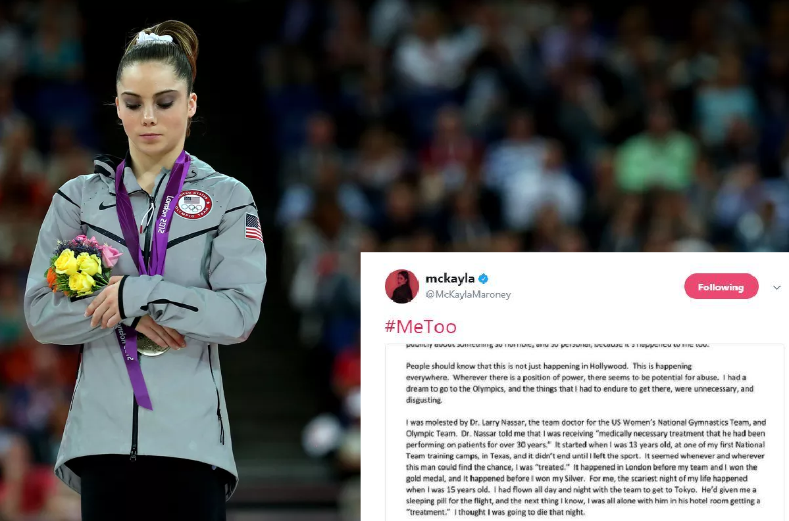
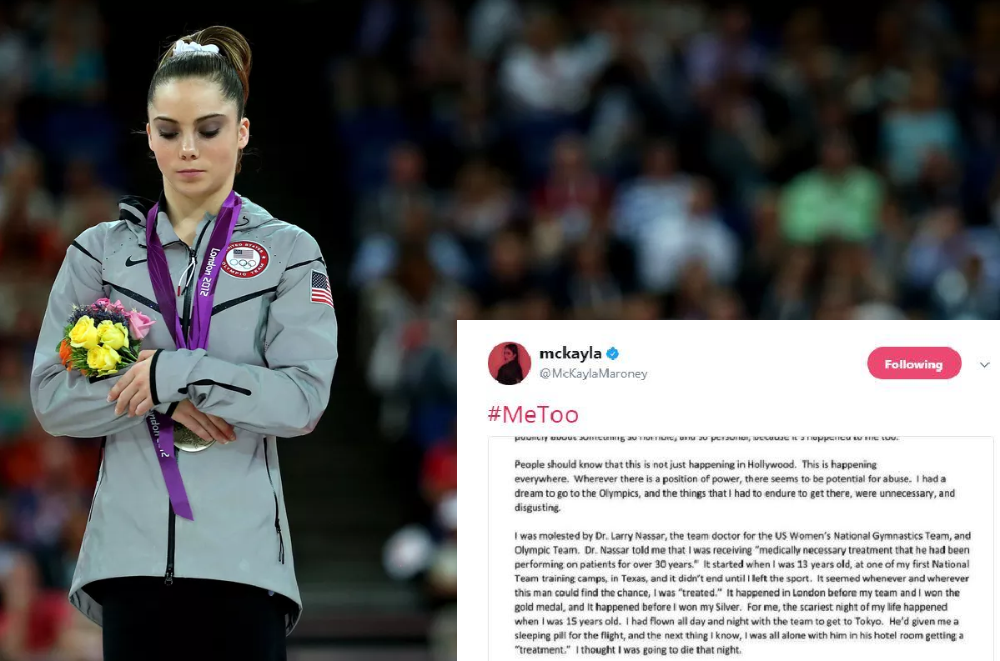

The MeToo movement is a publicized, social media movement against sexual misconduct. Alyssa Mirano, a popular female actress started the demonstration the following tweet on October 15, 2017.

Since that tweet, millions of people, of all genders and social statuses confronted their own experiences with sexual misconduct through sharing their stories.
 

Two of the most successful people in their respective industries, Terry Crews(left) and Mckayla Maroney(right), have come out against sexual misconduct.
Victims of sexual misconduct are forced to live their lives in a psychological prison. These people must conceal their pain and suffering in order to continue the lives they are living, effectively wearing a mask.
The Metoo movement has allowed these individuals to “take off their masks”, but in doing so often comes pain and consequence. "We Wear the Mask that Grins and Lies"